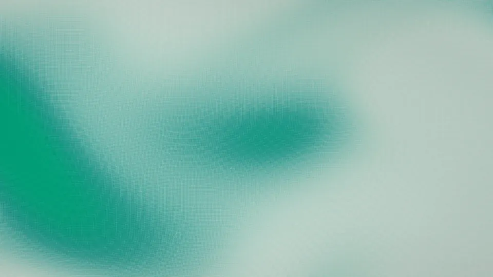

Live AI usage, quietly tucked into the edge of your Mac.
uNotch is a native menu bar utility for Claude, Codex, and Cursor Agent. Hover the edge of the screen, read your limits, and get back to work.
- macOS 14+
- Apple silicon
- Swift, no dependencies
- MIT
- No telemetry
Downloads uNotch-arm64.dmg, signed and notarized by Apple. Release notes. Reads the CLIs you already have — claude, codex, agent.

Hover the bottom of the rail, then click the gear.Tap the gear at the bottom of the rail.
Three providers, one quiet readout.
Every number comes from a command-line tool that is already signed in on your Mac. uNotch never asks for a key, never stores one, and never phones home. It shows only the providers you actually have installed — with one or two, the rail simply shrinks.
| Provider | Local source | Usage shown |
|---|---|---|
| Claude | Claude Code CLI /usage | 5-hour and weekly limits |
| Codex | Codex app-server rate limits | Available plan windows |
| Cursor | Cursor Agent CLI /usage | Monthly included usage |
Out of the way until you look.
A seven-point sliver at the screen edge is all you see. Everything else happens on hover.
Hover the edge
Rest the pointer on the cue for 150 ms. The rail and callout slide in with fresh numbers from the selected CLI.
Switch providers
Hover a logo on the rail to switch. Stale readings refresh on their own; the refresh control forces one.
Put it where you want
Drag the rail up, down, or across the display. Release near either edge and uNotch docks there and remembers.
Settings, when you reach for them
Hover the bottom of the HUD to reveal a gear. It opens a small section with a side picker, a drag handle, Update & Restart, and Quit. That is the whole settings surface.
Privacy by design, not by policy.
The mechanism is next to every claim. Read the full data flow in PRIVACY.md and the trust boundaries in SECURITY.md.
- No analytics, telemetry, advertising, or crash-reporting SDKs.There is no third-party code in the package at all.
- No account, cloud service, incoming server, or listening port.uNotch launches local CLIs and reads their output. That is the whole integration.
- CLI output is parsed in memory and never written to disk.Standard error is discarded so account identifiers and local paths never reach the interface.
- Two preferences are stored: the screen edge and the vertical position.
defaults delete app.unotch.utilityremoves both. - The only network request is the one you click: Update & Restart.It reads GitHub Releases, verifies the new build is signed by the same Team ID and passes Gatekeeper, then relaunches. Nothing runs on a timer.
Install in a minute. Verify in another.
Install
- Download
uNotch-arm64.dmg.Apple silicon, macOS 14 Sonoma or newer.
- Open the disk image and drag uNotch into Applications.
- Launch it. The mark appears in the menu bar; the cue appears at the screen edge.
Verify the download
shasum -a 256 -c SHA256SUMS
xcrun stapler validate uNotch-arm64.dmg
spctl --assess --type open \
--context context:primary-signature \
--verbose=2 uNotch-arm64.dmgspctl should report accepted with a notarized Developer ID source. Or skip the DMG entirely: swift run uNotch from a clone builds it with no dependencies.